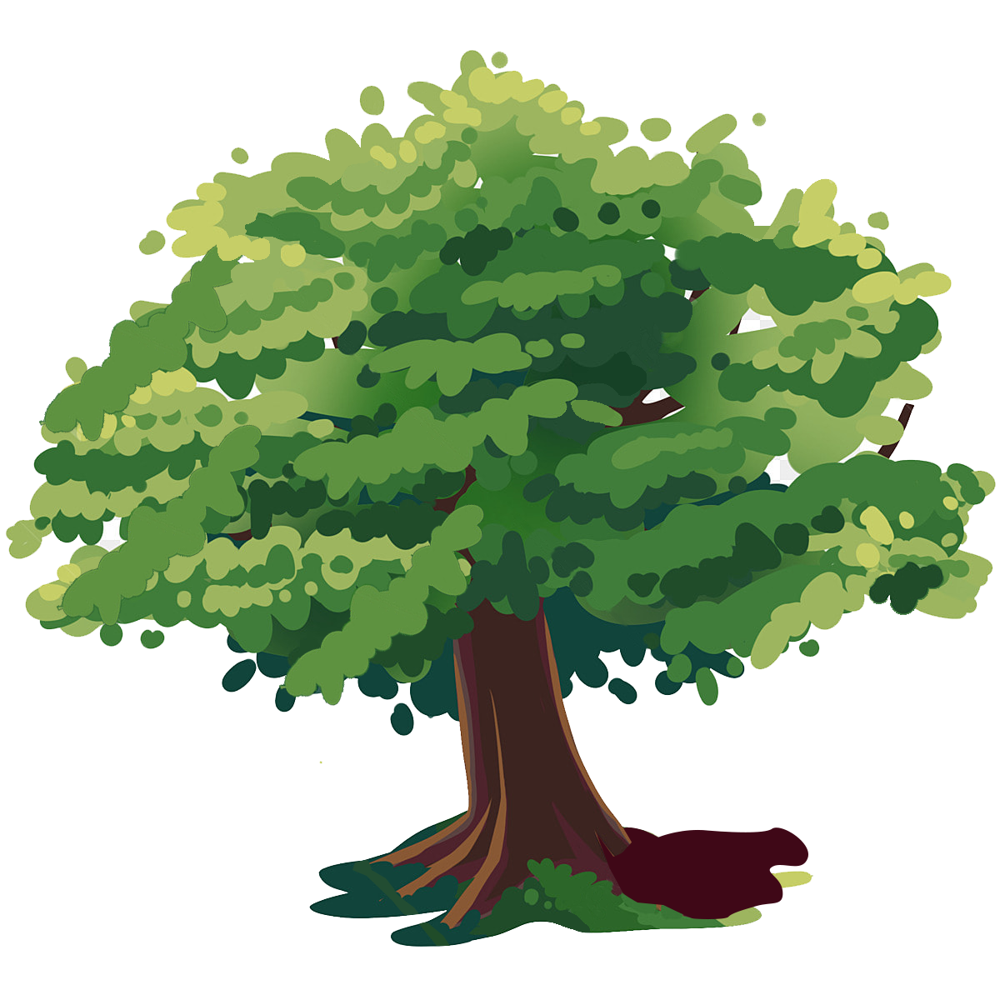

INSTITUTO SOCIOAMBIENTAL
E CULTURAL.
Fundada em 12 de março de
2001, é uma entidade sem fins lucrativos, com a finalidade de apoiar e desenvolver ações voltadas para a
melhoria da qualidade de vida das populações em
geral, em harmonia com a preservação do meio ambiente.
Através de atividade de caráter social, cultural, educacional, esportiva e ambiental, o INSTITUTO TARUMÃ busca contribuir para a construção de soluções criativas e locais para os desafios e problemas socioambientais da atualidade.
